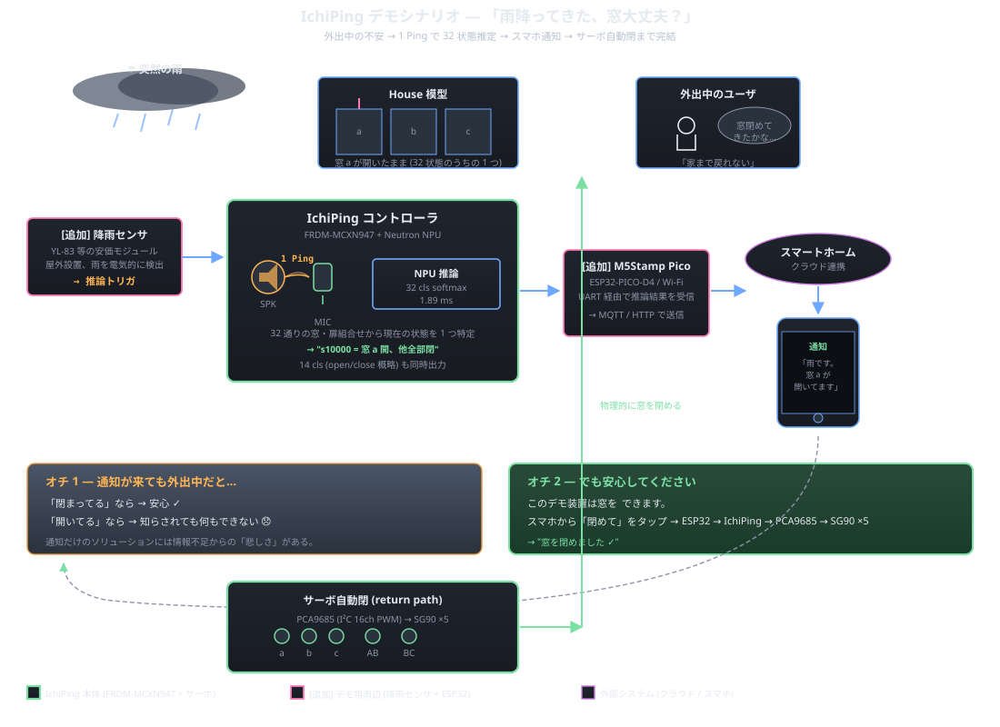

システム構成
機材は コントローラ筐体（MCU / 表示 / トグル / アンプ / サーボドライバ）と
House 模型（マイク / スピーカ / サーボ ×5）の 2 箱に分かれ、ケーブルで結ぶ構成。
模型側のトグルスイッチ ×5 は窓・扉の真値ラベルとして学習データに付与される。
信号の流れ（v1 構成）
| 段 | 担当 | 内容 |
|---|
| ① 励振 | MCU → MAX98357A → スピーカ | 200 Hz – 6 kHz の ESS（指数掃引）または可変周波数 chirp を I²S DAC から放射 |
| ② 観測 | INMP441（I²S MEMS マイク, 24-bit） | 同期して 16 kHz で取り込み、SAI1 DMA で MCU に転送 |
| ③ 整合 | PowerQuad FFT + 整合フィルタ | 1024 bin の log-magnitude スペクトルに圧縮 |
| ④ 推論 | MCXN947 内蔵 NPU で 1D CNN | 窓 a/b/c + 扉 AB/BC の開閉 5 ビット（真状態 32 通り / 実効区別 14 通り、後述）を同時出力 |
| ⑤ 表示 | ILI9341 TFT（LVGL） | 推定結果をフロアプランに重ねて可視化 |
| ⑥ 収集 | PC（pc/collector_client.py） | OpenSDA UART 921600 bps で WAV + ラベル CSV を吸い上げ、PyTorch で学習 → ONNX → eIQ Toolkit で MCU へ |
3 部屋アクリル模型（Phase 4 デモ）
3 部屋を模した 30 cm スケールのアクリル筐体に、PCA9685 経由で SG90 ×5 が
窓と扉を物理的に開閉する。模型側のトグルスイッチ ×5 を「真値」として
PC に送り、教師ありデータを半自動で量産できる仕組み。
主要部品（v1 BOM、約 $252）
| 役割 | 部品 |
|---|
| MCU | NXP FRDM-MCXN947 |
| マイク | InvenSense INMP441 I²S MEMS |
| アンプ | MAX98357A I²S Class-D |
| サーボ駆動 | PCA9685 + SG90 ×5（オチ 2「窓自動閉」担当） |
| 表示 | ILI9341 2.4" TFT 240×320（RGB565, LVGL） |
| 操作入力 | パネルトグル ×5（窓 a/b/c + 扉 AB/BC 真値）+ EXEC タクトスイッチ ×1 |
| PC 連携 | OpenSDA UART 921600 bps（学習データ収集用）／ USB CDC |
デモ用追加機器（雨検出 → スマホ通知シナリオ）
| 役割 | 部品 | 接続 |
|---|
| 降雨センサ | YL-83 等の安価モジュール | GPIO デジタル入力、屋外設置 |
| Wi-Fi モジュール | ESP32-WROOM | IchiPing と UART 接続、MQTT/HTTP でクラウド送信 |
| スマートホーム連携 | クラウド (Home Assistant 等の MQTT broker) | ESP32 から push、スマホアプリで受信 |
降雨センサと ESP32 は IchiPing 本体 (FRDM-MCXN947) には不要で、
雨検出 → 通知 → 自動閉までの完全自動化デモを成立させるための周辺機器として後付けします。
ストーリー
シーン — 「雨降ってきた、窓大丈夫？」
外出中に空が暗くなり、雨がポツポツと降り出した。スマホを取り出して —
「あれ、窓閉めてきたっけ…？」
家まで戻る時間も余裕もない。誰もが一度は経験する、地味だけど落ち着かない不安です。

IchiPing の解決 — 1 マイク 1 Ping で 32 状態を当てる
IchiPing は 「1 個のマイクと 1 発の Ping だけで、家中の窓と扉の開閉 32 通りを当てる」
ことを実現したエッジ AI デバイスです。これに 降雨センサ + ESP32 をデモ用周辺機器として追加することで、次のフローが成立します:
- 屋外の降雨センサが雨を検出
- ESP32 → IchiPing コントローラに推論トリガを送る
- IchiPing が 1 Ping → MCU 上の Neutron NPU で 1.89 ms 推論 → 窓・扉 32 状態のうちどれかを特定
- ESP32 が結果をスマートホームクラウドに送信
- ユーザのスマホに通知「窓 a が開いてます！」
2 段オチ
オチ 1 — 通知が来ても外出中だと…
- 「閉まってる」なら → 安心 ✓
- 「開いてる」なら → 知らされても何もできない 😞
通知だけのソリューションには 「情報があっても手が届かない悲しさ」 がある。
オチ 2 — でも安心してください。
このデモ装置は窓を サーボで自動開閉できます。
スマホから「閉めて」をタップ → ESP32 → IchiPing → PCA9685 → SG90 ×5 →
物理的に窓を閉める ✓
「聴く（推論）→ 通知 → 閉める（アクション）」の往復が、
1 個のセンサと 1 発の Ping から始まる
小さな AI デバイスで全部完結します。
なぜ「1 マイク 1 Ping」が成立するのか
家中にセンサを散らす方式は配線・電池交換・通信の地獄を抱えるのが常ですが、
室内の音響インパルス応答（RIR: Room Impulse Response）は
窓 1 枚が開くだけでも全体のモードと残響が変わるという性質を持ちます。
部屋を丸ごと共振器とみなして 1 点で全部聴くほうが筋がいい
— それが IchiPing の出発点です。
なぜ「アクティブセンシング」なのか
パッシブにマイクで生活音を聞くだけでは、家が静まりかえった時刻に観測できなく
なります。IchiPing は 物理 Ping（200 Hz から 6 kHz への能動的指数掃引）を撃ち、
その応答を分析するアクティブ計測スタイルを取ります。
- 部屋の状態 (窓/扉の組合せ 32 通り) が変わると、各モードの周波数とダンピングが変わる
- 扉が開くと隣接室と結合し、単一ピークが対称・反対称ペアに分裂する
- 窓が開くと放射損失で Q が落ち、ピーク幅が広がる
このような物理的に裏付けのある変化を 1D CNN に学習させ、組合せ状態を
一発で当てに行きます。CNN backbone は約 14K パラメータの軽量設計で、MCXN947
内蔵の NPU + PowerQuad DSP で INT8 推論まで完結します。
当初の理論的限界 → 実測で覆された
設計開始時、私たちは「窓 3 + 扉 2 = 5 ビット → 真状態 32 通りだが、扉が閉まると向こう側は遮断され
14 等価クラスが情報量上限になる」と予想していました。物理的に妥当に見えるこの予想は、
しかし v12345 検証で 経験的に否定されました。
実扉は完全遮音ではなく -20〜-30 dB 減衰程度であり、同じ等価クラスに見える状態にも
サブ状態を区別できるシグナルが残っていたのです
（nn_methods_compare §1）。
v12345 検証 (8 モデル × 32 状態 × MCU 実機 sweep) の結果:
| モデル | 32 cls (5-bit 状態) | 14 cls (等価クラス) | 校正 |
|---|
| v12345_BLJIT_live | 100% | 100% | LIVE 25 秒 |
| v12345_BLJIT_factory | 88% | 100% | なし (即時起動) |
| v12345_50f_live_noiselow | 100% | 100% | LIVE (騒音下) |
32 真状態すべてが MCU 実機で識別可能。詳細:
v12345 検証レポート。
決め手は Baseline jittering augmentation — 各録音を 5 種類の baseline で diff して
5 サンプル分に増殖させる学習手法で、これにより「baseline 環境に依存しないラベル決定境界」を獲得しました。
1 個のセンサに賭ける根拠
採用したのは InvenSense INMP441（I²S, 24-bit）です。
- I²S 出力なので 24 bit のダイナミックレンジをそのまま MCU へ持ち込める
- アナログ MEMS に比べて DC オフセット問題がなく、chirp/RIR 用途では特に扱いやすい
- MCXN947 の SAI（I²S）コントローラ多系統とそのまま噛み合う
出力側は MAX98357A（Class-D 3.2 W）で、デモ用には 8 Ω 0.25 W の 45 mm
フルレンジを 3 dB ゲイン固定で駆動。chirp は MCU 内で生成して I²S DAC ストリームに
流し込みます（firmware/projects/07_speaker_test,
08_mic_speaker_test, 09_collector が該当）。
ハードウェア構成
主要部品の選定根拠は
hardware/bom.html
と
docs/spec.html
§6 にまとまっています。
- MCU: NXP FRDM-MCXN947 — Cortex-M33 + 専用 NPU + PowerQuad DSP。$49 でこのスペックは破格
- TFT: ILI9341 — 240×320 RGB565。LVGL でフロアプラン UI を描画
- サーボ駆動: PCA9685 — I²C 0x40。デモ模型の窓 a/b/c + 扉 AB/BC を物理的に開閉
- データ経路: OpenSDA UART 921600 bps（v0.1）→ USB CDC（v0.3〜）
ソフトウェア構成
リポジトリは MCU 側 C ファームと PC 側 Python クライアント・学習パイプラインの
二段構成です。
firmware/projects/01_dummy_emitter 〜 10_inference — ブリングアップを段階分割した 10 プロジェクト群firmware/shared/ — フレーム形式、PCA9685/LU9685 ドライバ、SAI mic/speaker、励振パターンライブラリ、表示パネルpc/collector_client.py — シリアル/TCP/file 入力から WAV + CSV ラベルを保存pc/inference_client.py — 推論結果をリアルタイム可視化pc/patterns.yaml + pc/patterns.py — YAML 駆動の励振パターンライブラリpc/training/ — 1D CNN マルチタスク（〜14K params）の学習 → ONNX エクスポート → eIQ Toolkit で MCU へ
励振パターンを物理ベースで設計する
ただ広帯域 chirp を撃つだけでなく、3 部屋模型の共鳴周波数を物理的に予測
(f₁₀₀ ≈ 572 Hz) し、判別性の高い帯域に集中投下する励振パターン設計も
検討中です。これにより学習サンプル数の削減と推論の interpretable 化を狙います。
詳細は
docs/probe_sound.html
にまとめています。
ロードマップ
- v0.1〜v0.4 シリアル疎通 → I²S 放射/受信 → サーボ制御 → 3 部屋模型自動データ収集（達成済）
- v0.5〜v0.7 14cls/32cls 両 head Neutron 互換モデル → INT8 量子化 → Neutron 変換 (NPU 比率 7/7 = 100%, 108 KB, 1.89 ms)（達成済）
- v1.0 MCU 実機検証 v12345 sweep (8 モデル × 32 状態、32cls / 14cls とも 100% 達成)（達成済）
- v1.5 TFT (ILI9341) でフロアプラン表示 + EXEC ボタンによる手動デモモード
- デモ拡張 降雨センサ + ESP32 を接続して雨検出 → スマホ通知 → サーボ自動閉まで完結
- v2.0 ROHM ML63Q2557 + Solist-AI への移植（ROHM EDGE HACK 2026 提出版）
応募先
- DigiKey M1 デザインコンテスト
- ROHM EDGE HACK 2026（v2.0 で Solist-AI 移植版を提出予定）
プロジェクト名の由来
「イチ個のマイクで、Ping！と当てる」「1 発の Ping で家中を聴く」
というコンセプトを縮めて IchiPing。当初は気圧センサで攻める案
（DoorBaro / WindowGuard）でしたが、音響アクティブ計測のほうが筋が良いと
判断してピボットしました。
リポジトリ
ソース・ドキュメント・配線図・部品表すべて公開しています。
https://github.com/airpocket-soundman/IchiPing